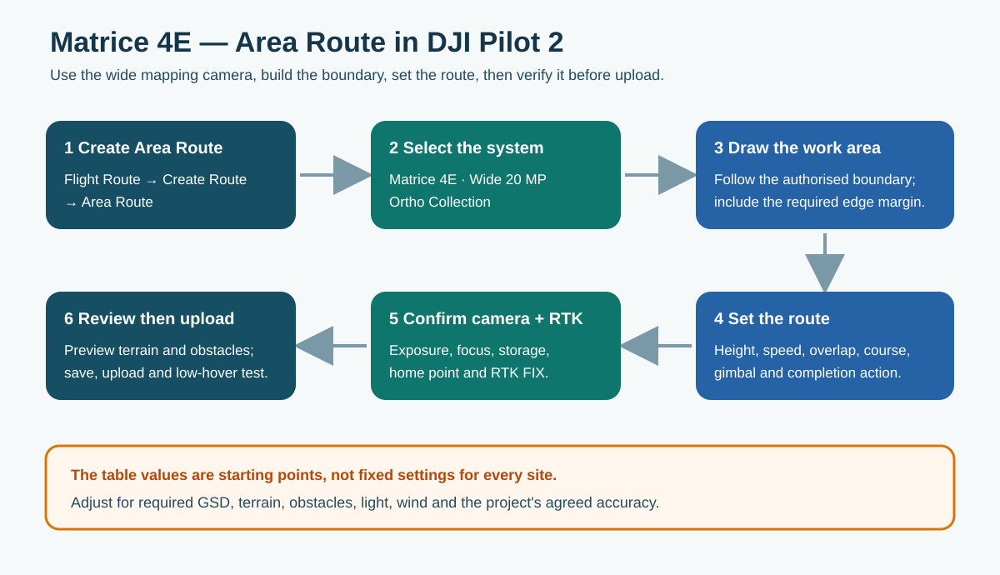
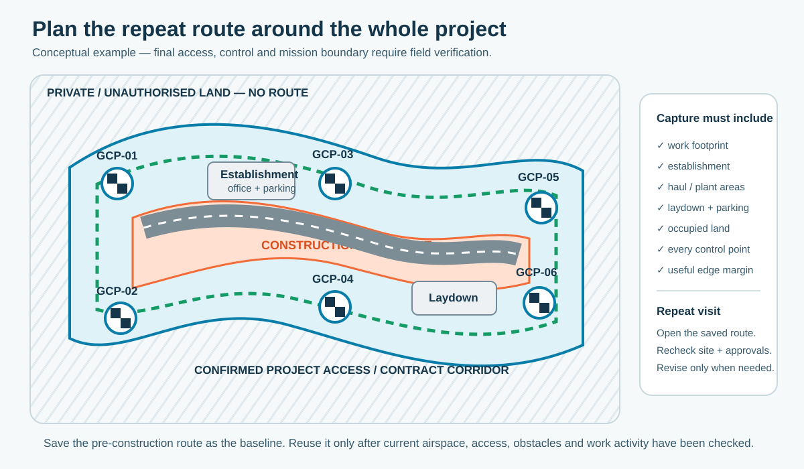
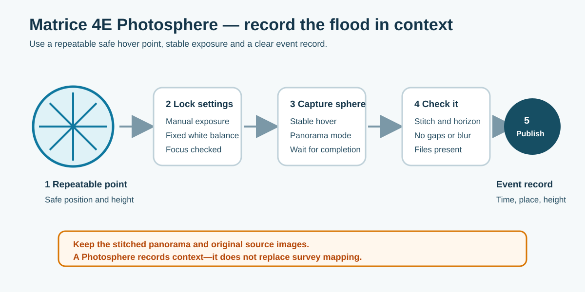

6. Mission planning and capture
6.1 Matrice 4E area route in DJI Pilot 2

Figure 13. Create the area route, select the aircraft and wide mapping camera, draw the authorised work area, then set and verify the route.
Manufacturer workflow: Flight Route → Create a Route → Area Route; select the aircraft, camera and lens; choose Ortho Collection; set the boundary and route; preview it, save, upload and complete a low-hover check.
The route must cover more than the immediate earthworks. Include the construction footprint, site establishment, vehicle and plant operating areas, laydown/overnight parking, the full land-access or compensation area, every permanent control point and a useful margin beyond them. Keep the route inside authorised land and airspace.

Figure 14. Conceptual coverage plan. Required features and control belong inside the reliable captured area, not at the edge where turns and reconstruction artefacts are more likely.
Proposed BOPRC starting point — Matrice 4E routine photogrammetry:
| Setting | Starting value | Adjust when |
|---|---|---|
| Route | Area Route / Ortho Collection | Use another route type only when the capture purpose requires it. |
| Camera | Matrice 4E wide 20 MP | Confirm the correct camera/lens is selected. |
| Height | 60 m AGL | Change to meet required GSD, terrain, obstacles, airspace and coverage. Pilot 2's displayed GSD should be checked. |
| Speed | 5–7 m/s | Slow down in low light, gusty conditions, complex terrain or where sharper images are needed. |
| Forward overlap | 80% | Increase to about 85% for relief, vegetation or difficult edges. |
| Side overlap | 70% | Increase to about 75% for relief, vegetation or difficult edges. |
| Gimbal | −90° nadir | Add oblique capture only when required and planned. |
| RTK | FIX before capture | Pause survey capture if correction quality becomes uncertain. |
| Shutter | Mechanical shutter | Check that the mission can maintain the required photo interval. |
| Elevation optimisation | On for orthophoto work | Review the actual DJI workflow and output purpose. |
| Completion action | Return-to-home when suitable | Change when the site plan requires hover or landing; always verify RTH height/path. |
These values are not a substitute for designing the mission. Adjust them for the required GSD, terrain, obstacles, light, wind, safe operating area and agreed accuracy.
Repeat construction survey: save the checked pre-construction route as the controlled baseline. On the next visit, open it from the Flight Route library, review the saved aircraft/camera, boundary, height, speed, overlap, gimbal, RTK and completion action, and rerun it only after current airspace, access, obstacles, plant, take-off area and RTH path have been checked. If it no longer fits the site safely, save a controlled revision and record why it changed; do not overwrite the baseline casually.
Before each construction-site flight, confirm the site manager and BOPRC project contact, induction/sign-in requirements, flight window, workers, exclusion area and plant movements. No saved route replaces a current go/no-go decision.
Storage ready: each aircraft travels with a clean, compatible, correctly formatted working microSD card and its own ready backup card. Confirm the card is recognised, has enough space and records a test file. Never format the only copy of a mission.
6.2 Matrice 4E photo settings
The Matrice 4E wide mapping camera is a 20 MP, 4/3 CMOS camera with adjustable f/2.8–f/11 aperture and a mechanical shutter.
Nadir mapping photographs
| Setting | Proposed starting value | Practical note |
|---|---|---|
| ISO | 100 | Keep noise low; avoid going above 400 unless conditions require it. |
| Shutter | 1/800–1/1000 s | Use a faster shutter for wind, movement or a faster route. Check actual images for blur. |
| Aperture | f/5.6 | Work within roughly f/4–f/8 as light changes. Avoid forcing ISO or shutter outside the useful range. |
| White balance | Fixed Manual, Sunny or Cloudy | Do not leave it changing from image to image across a mapping mission. |
| Focus | Autofocus on a representative textured surface, verify, then lock/manual where available | Do not use an unverified infinity setting. Inspect a test image at full size. |
| File format | JPEG for routine mapping | Use JPEG + RAW only when the purpose justifies the additional interval, storage and processing cost. |
Before the production route, open a test image and check sharpness, exposure, storage and RTK/metadata. A short test is quicker than re-flying the full site.
Oblique record photographs
Oblique images are angled records of flood conditions, assets, effects, site context and construction activity. They do not replace the nadir mapping dataset.
- use the wide camera unless a defined inspection requires another lens;
- use ISO 100–400, a shutter fast enough to prevent blur and a fixed white balance as practical starting points;
- make deliberate, overlapping views from a safe stable position rather than random isolated images;
- retain EXIF/location information and record the event/site, date and time, view direction, height and what the sequence shows; and
- retain the originals under the Survey/Event ID. Approved copies are intended to feed the future Flood Media Viewer when that system is ready.
6.3 Matrice 4E video settings
Video provides progress and visual updates for project, management, ELT/leadership, stakeholder and special-interest-group meetings. It also provides a time-specific construction or flood record and may help resolve a later question about what occurred and when.
| Setting | Proposed starting value | Practical note |
|---|---|---|
| Camera | Wide camera | Use zoom only for a defined inspection need; avoid digital zoom as a substitute for safe positioning. |
| Resolution | 4K, 30 fps | The M4E records 4K or Full HD at 30 fps. |
| Codec | H.264 | Use H.265 only where the viewing/editing workflow supports it. |
| ISO | 100–400 | Keep it low where possible. |
| Shutter | 1/60 s for normal smooth 30 fps video | Use 1/250 s or faster when extracting sharp still frames or recording faster movement is more important than natural motion blur. |
| Aperture | f/4–f/5.6 | Adjust for the light while protecting shutter and ISO. |
| White balance | Fixed manual value/preset | Avoid visible colour changes within a clip. |
Use slow, deliberate gimbal movement and short labelled clips. Record what the clip shows, where it was taken, the direction of view and the event or construction stage. Video supports communication and the project record; it is useful only when its master file and context can be found later.
6.4 Photosphere capture for flood records
DJI lists Panorama as a supported Matrice 4E still-photo mode, using 20 MP source images and producing an approximately 100 MP stitched panorama. Use Photospheres to show flood conditions in context — not as survey measurement.

Figure 15. Use a repeatable safe hover point, fixed exposure and a complete event record.
- Choose a safe, repeatable hover point and a height that gives the required context. Proposed starting range: 30–60 m AGL, subject to VLOS, airspace, obstacles and the event purpose.
- In the current DJI Pilot 2 camera view, select the wide camera and Panorama mode. Confirm the precise menu on the installed controller and verify focus.
- Use stable manual exposure and fixed white balance where the current interface allows it, reducing visible seams between frames.
- Hold a stable hover and wait until the capture is complete.
- Inspect the stitch, horizon, gaps and blur before leaving the site.
- Keep the stitched panorama and original source images.
- Record site, flood/event name, date/time, position, height, weather and any available water-level reference.
DroneDeploy option: current DroneDeploy guidance supports uploading and managing panorama media from mobile or web, including processed panoramas from other devices. Where this remains the team workflow, open the correct project and date, upload the panorama/source set using the current Upload → New Upload path, confirm the media is recognised as a panorama, check the stitched view and location, name it with the Event/Survey ID and retain a durable reference in BOPRC metadata. Subscription features and menu labels can change; validate this workflow with the team's account before controlled issue.
Keep the original source images and DJI stitch in BOPRC-managed storage even when a copy is hosted in DroneDeploy. A cloud share link is not the archive.
6.5 M350 RTK and Zenmuse L2 LiDAR route
The settings belong to the Zenmuse L2 payload on the M350 RTK, not to the aircraft alone.
Physical setup
- Inspect the M350 RTK, matched battery pair, propellers, controller, payload and clean working/backup storage cards.
- With the aircraft powered off, fit and lock the L2 on the supported gimbal connector; check the cap, lens/window and connector are clean.
- Power the controller, then the aircraft. Confirm the L2 is recognised and the aircraft, payload and firmware combination is supported.
- Confirm gimbal movement, storage, GNSS/RTK and status messages, then complete the normal low-hover/function check.
DJI Pilot 2 setup
- Open or create the approved Area Route / LiDAR Mapping task and confirm M350 RTK + Zenmuse L2.
- Check the authorised boundary and the same full-site/edge-margin logic used in Section 6.1.
- Set height, speed, scan mode, side overlap, IMU calibration, RGB colouring, visible-image overlap and completion action.
- Confirm home point, RTH height/path, RTK FIX, storage, obstacle settings and route preview before upload.
Manufacturer reference: DJI describes LiDAR Mapping/Area Route, repetitive scanning, IMU calibration, RGB colouring and RTK FIX. Its published reference includes 150 m altitude, 15 m/s and side overlap of at least 20%. A routine Part 101 flight in New Zealand is limited to 120 m AGL, so 150 m is not a routine BOPRC Part 101 setting.
Proposed BOPRC Part 101 starting point — confirm through vendor consultation and field validation:
| Setting | Starting value | Practical note |
|---|---|---|
| Route | Area Route / LiDAR Mapping | Confirm the payload and mission type before setting the boundary. |
| Height | 80–100 m AGL | Adjust for density, terrain, vegetation, required detail, obstacles and the 120 m Part 101 ceiling. |
| Speed | 8–12 m/s | Slow down for greater density, complex terrain or difficult vegetation. |
| Scan mode | Repetitive | DJI's normal topographic-mapping recommendation. |
| Side overlap | 30% general | Increase toward 50% for steep terrain, denser coverage or difficult edges. |
| IMU calibration | Enabled | Allow the planned calibration segments and do not clip them with a tight boundary. |
| RTK | FIX before capture | Pause and assess after correction or calibration warnings. |
| RGB colouring | On when required | Confirm image exposure and storage as well as LiDAR capture. |
| Visible-image forward overlap | 80% if an orthophoto is required | Do not add the orthophoto output when it is not needed. |
| Completion action | Return-to-home when suitable | Verify RTH path, height, wind and landing area. |
Before leaving site, check that the complete L2 mission folder, trajectory/positioning files, LiDAR data and any required RGB images are present.